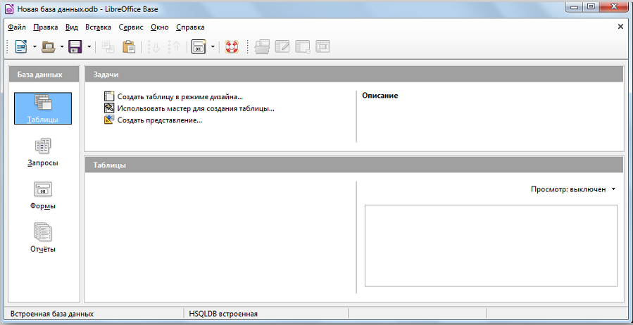
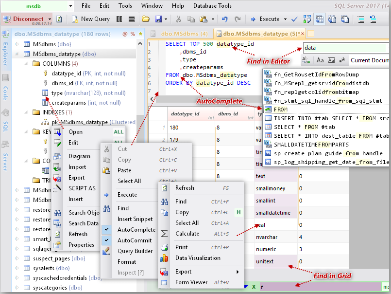
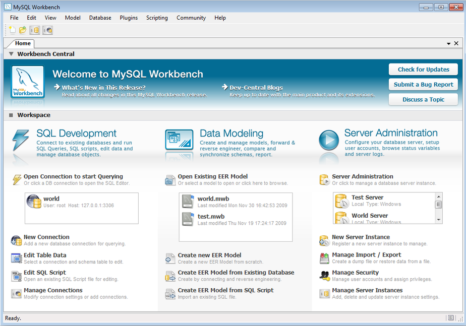
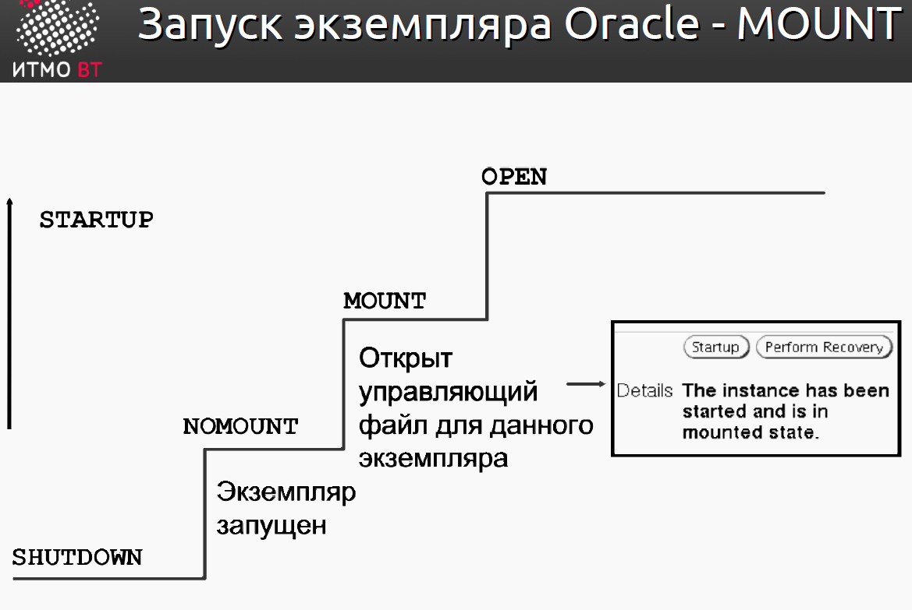
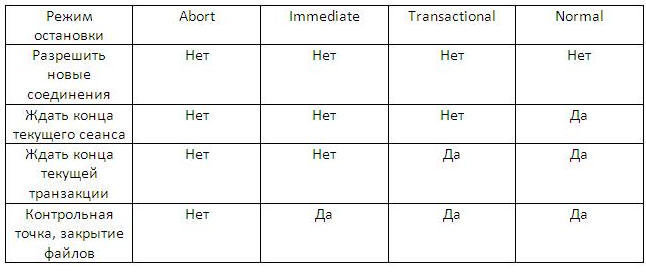

1.Обязанности администратора баз данных. Основные утилиты администратора баз данных. Режимы запуска и останова базы данных.
Обязанности администратора баз данных
Поскольку система баз данных ORACLE может быть весьма большой и может иметь много пользователей, должно существовать лицо или группа лиц, управляющих этой системой. Такое лицо называется администратором базы данных (АБД).
В любой базе данных должен быть хотя бы один человек, выполняющий административные обязанности; если база данных большая, эти обязанности могут быть распределены между несколькими администраторами.
В обязанности администратора могут входить:
- инсталляция и обновление версий сервера ORACLE и прикладных инструментов
- распределение дисковой памяти и планирование будущих требований системы к памяти
- создание первичных структур памяти в базе данных (табличных пространств) по мере проектирования приложений разработчиками приложений
- создание первичных объектов (таблиц, представлений, индексов) по мере проектирования приложений разработчиками
- модификация структуры базы данных в соответствии с потребностями приложений
- зачисление пользователей и поддержание защиты системы
- соблюдение лицензионного соглашения ORACLE
- управление и отслеживание доступа пользователей к базе данных
- отслеживание и оптимизация производительности базы данных
- планирование резервного копирования и восстановления
- поддержание архивных данных на устройствах хранения информации
- осуществление резервного копирования и восстановления
- обращение в корпорацию Oracle за техническим сопровождением
Сотрудники службы безопасности
В некоторых случаях база данных должна также иметь одного или нескольких сотрудников службы безопасности. СОТРУДНИК СЛУЖБЫ БЕЗОПАСНОСТИ главным образом отвечает за регистрацию новых пользователей, управление и отслеживание доступа пользователей к базе данных, и защиту базы данных.
Разработчики приложений
В обязанности разработчика приложений входит:
- проектирование и разработка приложений базы данных
- проектирование структуры базы данных в соответствии с требованиями приложений
- оценка требований памяти для приложения
- формулирование модификаций структуры базы данных для приложения
- передача вышеупомянутой информации администратору базы данных
- настройка приложения в процессе его разработки
- установка мер по защите приложения в процессе его разработки
Основные утилиты администрирования баз данных
Утилита администрирования базы данных — утилита, предназначенная для выполнения специфических операций над базой данных. С помощью утилиты администрирования базы данных можно выполнить ряд действий, направленных на улучшение работы системы.
Microsoft Access
Начать стоит с самой распространенной СУБД — Microsoft Access, — обладающей широкой функциональностью и простотой для начинающих пользователей. Ее используют как для обучения, так и для вполне практичных задач. Из наиболее примечательных опций стоит отметить наличие шаблонов различных баз и возможность переключения между двумя режимами — таблицы и конструктора. Шаблоны позволяют не тратить время на макет, а выбрать подходящий вариант: «Контакты», «Отслеживание активов», «Пользовательское веб-приложение», «Управление проектами» и др.
Рис.1.1 Microsoft Access
В каждой ячейке базы данных пользователь устанавливает тип данных, выбирая его из списка. Это может быть краткий или длинный текст, число, денежная сумма, дата и время, логическое значение, гиперссылка и т. д. Присутствует многофункциональный модуль для составления отчетов, запросов и форм, предусматривающий множество изменяемых параметров. Интерфейс поддерживает русский язык, а для начинающих пользователей реализовано подробное руководство с описанием всех процессов. Access является платным и распространяется в рамках офисного пакета от Microsoft.
LibreOffice
LibreOffice — это комплекс прикладных приложений, который может стать отличным аналогом Microsoft Office в целом и Access в частности. Рассматриваемый вариант можно использовать для работы с текстовыми документами, таблицами, презентациями, графическими изображениями, математическими записями и базами данных. Пакет устанавливается полностью, после чего пользователь сам выбирает необходимый модуль для запуска. Для БД используется формат ODB.

Рис.1.2 LibreOffice
В LibreOffice предусмотрены практически все функции, которые можно найти в Access. При этом разработчики постарались сделать максимально простой и привлекательный инструмент без загромождения огромным количеством кнопок и категорий. В главном окне расположены только самые основные возможности. Однако в рассматриваемом решении отсутствует мастер для создания баз данных со стандартными шаблонами. Приложение обладает открытым исходным кодом и его можно бесплатно скачать на русском языке.
Database.NET
На очереди бесплатный продукт с открытым исходным кодом, предназначенный для работы с базами данных. В Database.NET можно создавать, импортировать и экспортировать, редактировать и удалять БД. Доступен экспорт в форматы CSV, XML и TXT, а также распечатка таблицы. Для работы с SQL предусмотрена удобная консоль с подсветкой синтаксиса.

Рис.1.3 Database.NET
Database.NET работает со всеми современными форматами баз данных и таблиц. Среди них Access, Excel, Firebird, MySQL, SQL Server, SQL Azure, SQLCE, SQLite, PostgreSQL, Oracle, DB2, OLEDB, ODBC и OData. Примечательно, что рассматриваемое решение не требует установки. Официальная версия является портативной, что позволяет записать ее на флешку и запускать на любом устройстве. Приложение можно установить бесплатно или приобрести расширенную версию. Присутствует русскоязычная локализация.
MySQL Workbench
Как понятно из названия, Workbench работает с базами на основе технологии MySQL. Она создана ее разработчиками, поэтому здесь сосредоточены все инструменты для создания и администрирования БД, которые могут пригодиться на практике. Подойдет даже для начинающих пользователей, поскольку все действия выполняются через удобный интерфейс. Из основных функций стоит отметить возможность установки шаблона для автоматического индексирования ячеек, выполнения запросов и смены сценариев SQL.

Рис.1.4 MySQL Workbench
Важно отметить, что в MySQL Workbench предусмотрен модуль для визуального проектирования. Формирование таблиц и создание связей между ними осуществляется с помощью ER-диаграмм. Выделяется синтаксис SQL, отмечаются допущенные ошибки при наборе как обычного текста, так и кода. Интерфейс является весьма удобным, но он не поддерживает русского языка, что может стать проблемой.
Режимы остановки и запуска экземпляра базы данных

Рис.1.5 Режимы остановки и запуска экземпляра базы данных
В этом уроке я постараюсь подробнее рассказать о запуске и остановке экземпляра базы данных. Вам, как DBA неоднократно придется запускать и останавливать базы данных. Рассмотрим опции запуска и остановки, которые вы должны знать и понимать, чтобы потом успешно применять их.
Для запуска или остановке экземпляра, вы должны быть подключены с соответствующими привилегиями. Для этого существует две специально авторизованных учетных записи SYSDBA или SYSOPER. SYSDBA авторизован на абсолютно все задачи связанные с базой данных, полномочия SYSOPER несколько меньше, но тем не менее они позволяют проводить остановку и запуск экземпляра Oracle. Когда база данных только что установлена, только SYS может соединиться с базой данных с разрешение SYSDBA. Далее вы можете дать привилегию SYSOPER, для выполнения ряда административных мероприятий. Теперь обсудим как выполнять запуск базы данных.
Запуск базы данных
Как упоминалось ранее, экземпляр Oracle состоит из нескольких процессов и логических структур памяти, которые позволяют пользователю общаться с базой данных. Во время запуска базы данных, эти структуры инициализируются и запускаются. При запуске базы данных, она проходит через несколько шагов, для проверки ее целостности. При запуске база данных использует три режима: NOMOUNT, MOUNT и OPEN. Рассмотрим каждый из них подробнее.
STARTUP NOMOUNT
STARTUP NOMOUNT запускает базу данных без монтирования. Когда база данных запущена в этом режиме, читается файл параметров, инициализируются фоновые процессы и структуры памяти, но они не связываются с дисковыми структурами базы данных. Когда база данных в этом состоянии, она недоступна для использования.
Если база данных запущена в режиме NOMOUNT, то вы можете выполнять некоторые задачи, например запуск скриптов на создание основной базы данных.
Иногда база данных недоступна для перехода в следующий режим - MOUNT, и остается в состоянии NOMOUNT. Например, такое возможно при проблеме с доступом к управляющим файлам, которые содержат важную информацию для продолжения процесса запуска. Если эти файловые структуры недоступны или повреждены, то процесс запуска базы данных не может быть продолжен, до решения проблемы.
STARTUP MOUNT
Опция STARTUP MOUNT выполняет все шаги опции STARTUP NOMOUNT, но еще так же связывает и взаимодействует со структурами базы данных. В этот момент, Oracle получает информацию от управляющих файлов, которые используются для связи с основными структурами базы данных. Часть административных задач выполняется в этом режиме, например, восстановление базы данных. Так же можно изменять физическое расположение файлов и перевести базу данных в режим ARCHIVE LOG.
STARTUP OPEN
Опция STARTUP OPEN является опцией по-умолчанию, если не указано иное. Она выполняет все операции STARTUP NOMOUNT и STARTUP MOUNT. Эта опция делает базу данных доступной для пользователей.
Хотя обычно используются три режима: STARTUP NOMOUNT, STARTUP MOUNT и STARTUP OPEN, доступны еще опции запуска, которые вы можете использовать в ряде ситуаций. Это STARTUP FORCE и STARTUP RESTRICT. О них и пойдет речь далее.
STARTUP FORCE
STRATUP FORCE может использоваться, если у вас есть трудности с запуском базы данных в нормальном режиме. Например, если сервер базы данных был неожиданно отключен от электричества и база данных была резко остановлена. В этом случае может помочь STARTUP FORCE. В нормальной ситуации этот режим не требуется, но может пригодится, если нормальный запуск не работает.
Основное отличие этой опции от других, это то, что она может быть исполнена в любое время, независимо от режима в котором находится база данных. Это режим запуска выполняет остановку базы данных в режиме ABORT и перезапускает ее.
STARTUP RESTRICT
STARTUP RESTRICT запускает базу данных и переводит ее в режим OPEN, но предоставляет доступ только тем пользователям, которые имеют привилегию RESTRICTED SESSION. Возможно потребуется открыть базу данных в этом режиме для проведения технических работ по обслуживанию, когда база данных открыта, но вы хотите быть уверены, что пользователи не работают с базой. Так же можно открыть базу данных используя опцию RESTRICTED при выполнении импорта или экспорта и требуется гарантия, отсутствия пользователей в базе данных. После завершения работ, вы можете перевести базу в нормальный режим, чтобы каждый мог с ней работать. Для этого выполните: ALTER SYSTEM DISABLE RESTRICTED SESSION;
Остановка базы данных Oracle

Рис.1.6 Возможности Остановки базы данных
SHUTDOWN NORMAL
Опция SHUTDOWN NORMAL является опцией по умолчанию и используется если не указаны иные опции. При такой остановке базы данных следует знать:
- Во время выполнения SHUTDOWN NORMAL не позволены никакие новые соединения пользователей с базой данных Oracle будет ждать пока все пользователи завершат свои сеансы подключения к базе данных, и только после этого продолжит процесс остановки
- Поскольку Oracle ожидает завершения всех пользовательских сеансов, вы можете определить пользователей подключенных к базе данных самостоятельно. Так же можно определить неактивных пользователей, не выполняющих никаких действий с БД в течение продолжительного времени и принудительно завершить их
- Такой способ остановки называется "чистым", потому что в случае такой остановки не потребуется восстановление и все проходит в штатном режиме.
SHUTDOWN TRANSACTIONAL
Транзакционный способ производит остановку базы данных в несколько более агрессивном режиме, чем NORMAL. Характеристики транзакционного способа остановки:
- Во время выполнения SHUTDOWN TRANSACTIONAL не позволены никакие новые соединения пользователей с базой данных
- С момента запуска SHUTDOWN TRANSACTIONAL не позволены никакие транзакции
- Oracle ждет завершения текущих транзакций, существующие подключения к базе данных разрываются
Такой способ остановки позволяет клиентам перед отключением завершить текущие транзакции, таким образом не потерять их и не потерять проделанную работу. Этот тип остановки также называется чистым, поскольку все проходит в штатном режиме.
SHUTDOWN IMMEDIATE
Является следующим по агрессивности шагом. Опция SHUTDOWN IMMEDIATE характеризуется следующим:
- Во время выполнения SHUTDOWN IMMEDIATE не позволены новые подключения к базе данных
- Все незавершенные транзакции откатываются. Т.е. если транзакция пользователя в процессе исполнения, то он теряет проделанную работу (в рамках транзакции)
- Oracle не ожидает завершения транзакций, откатывает их, и разрывает существующие подключения к базе данных
Этот тип остановки удобен когда требуется оставить Oracle без присмотра и требуется быть уверенным, что база данных остановится и пользователи будут отключены. Остановку таким способом можно считать чистой, после такой остановки не требуется восстановления базы данных.
SHUTDOWN ABORT
SHUTDOWN ABORT самый агрессивный способ остановки базы данных, характеризуется следующим:
- Во время исполнения SHUTDOWN ABORT новые подключения не позволены
- Прекращается исполнение любых SQL команд, независимо от состояния
- Незавершенные транзакции не откатываются
- Oracle разрывает все существующие подключения немедленно, как выпущена команда SHUTDOWN ABORT
Старайтесь не использовать SHUTDOWN ABORT. Используйте только в тех случаях, когда другие опции остановки не удались, или ваш опыт позволяет использовать эту опцию в данной ситуации. SHUTDOWN ABORT не является чистой остановкой базы данных, и после ее запуска может потребоваться восстановление.
Остановка базы данных средствами SQL*plus
Для остановки базы данных подключаемся к sqlplus в командной строке пользователем SYS или другим имеющим привилегии на запуск и остановку базы данных, и выполняем:
[oracle@test bin]$ ./sqlplus / as sysdba SQL*Plus: Release 11.1.0.7.0 - Production on Fri Apr 10 12:45:05 2009 Copyright (c) 1982, 2008, Oracle. All rights reserved. Connected to: Oracle Database 11g Enterprise Edition Release 11.1.0.7.0 - Production With the Partitioning, OLAP, Data Mining and Real Application Testing options SQL> shutdown immediate Database closed. Database dismounted. ORACLE instance shut down. SQL>
Остановка экземпляра БД средствами EM
Остановка экземпляра базы данных происходит аналогично запуску, за тем исключением, что на главной странице выбираем опцию Shutdown. На этом наш урок завершен.